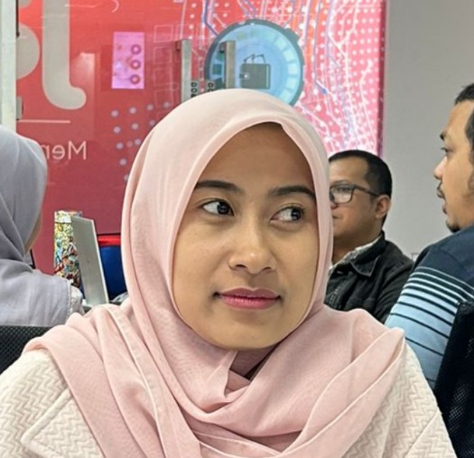
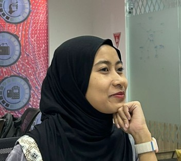

Maha Suci Allah yang telah menciptakan makhluk-Nya berpasang-pasangan
Alip
Mempelai Pria

Qatherin
Mempelai Putri
QS. Ar-Rum: 21
وَمِنْ آيَاتِهِ أَنْ خَلَقَ لَكُم مِّنْ أَنفُسِكُمْ أَزْوَاجًا لِّتَسْكُنُوا إِلَيْهَا وَجَعَلَ بَيْنَكُم مَّوَدَّةً وَرَحْمَةً
"Dan di antara tanda-tanda (kebesaran)-Nya ialah Dia menciptakan pasangan-pasangan untukmu dari jenismu sendiri, agar kamu cenderung dan merasa tenteram kepadanya, dan Dia menjadikan di antaramu rasa kasih dan sayang."
Our Moment

"Forever starts today."
Save The Date
Kamis
1
Januari 2026
Resepsi Pernikahan
09:00 - 14:00 WIB
Dea tower - LT GF
Kuningan jakarta selatan dekat belagio dah